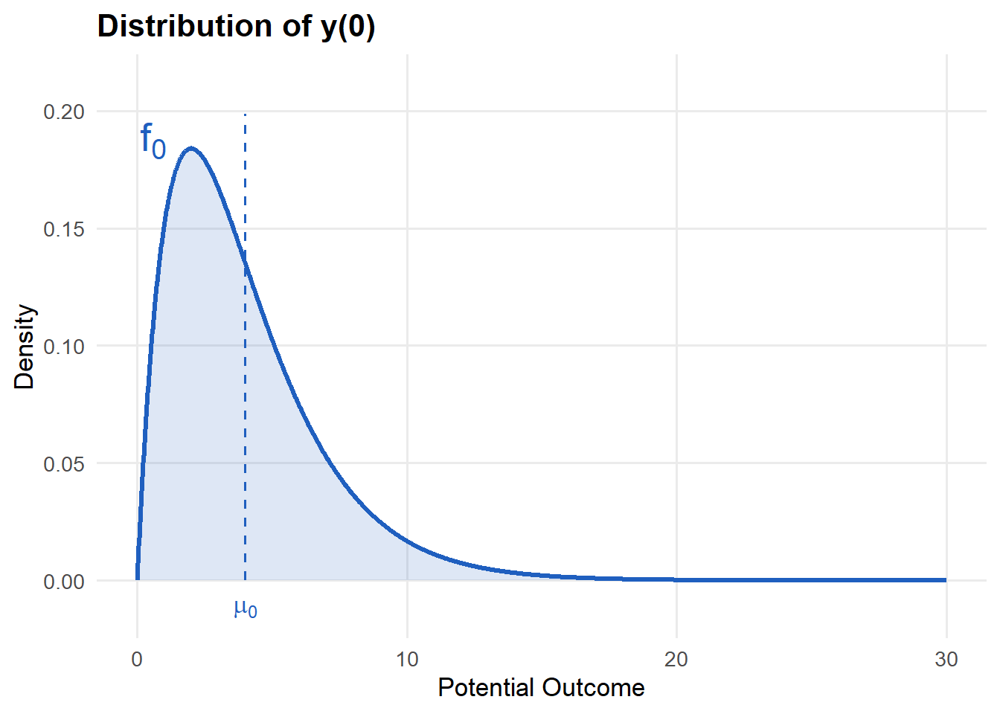
Causal Inference and Randomized Experiments
Lecture 6
Reading
This lecture covers material from Wooldridge (2025):
- Chapter 2.7 “Regression on a Binary Explanatory Variable”
- Chapter 2.7a “Counterfactual (or Potential) Outcomes, Causality, and Policy Analysis”
- Chapter 7.1 “Describing Qualitative Information”
- Chapter 7.2 “A Single Dummy Independent Variable”
- Chapter 7.3 “Using Dummy Variables for Multiple Categories”
- Chapter 7.6b “Regression Adjustment under Randomized Assignment”
We will discuss the earlier part of Chapter 7.6 (7.6a “Program Evaluation and Unrestricted Regression Adjustment”) in Week 8.
Chapter 7.1-7.3 should probably have been assigned much earlier. However, if you haven’t read them, now is a good time to. The lecture this week will not discuss multiple categories as much, as we will focus on understanding potential outcome and causation.
Example: Dizon-Ross (2019)
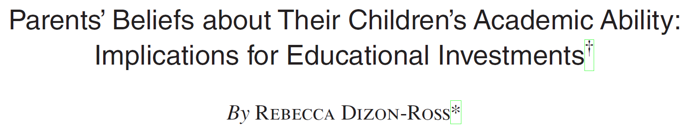
NoteIn a nutshell
Rural Malawi in 2012. School is free, but parents still spend money on their children’s education. They have to decide on how much to invest based on what they know their children’s academic potential. In reality, they have very poor (inaccurate) knowledge of their children’s academic performance.
What would happen if you provided parents with more accessible information? Would they invest more? Differently?
Research Design
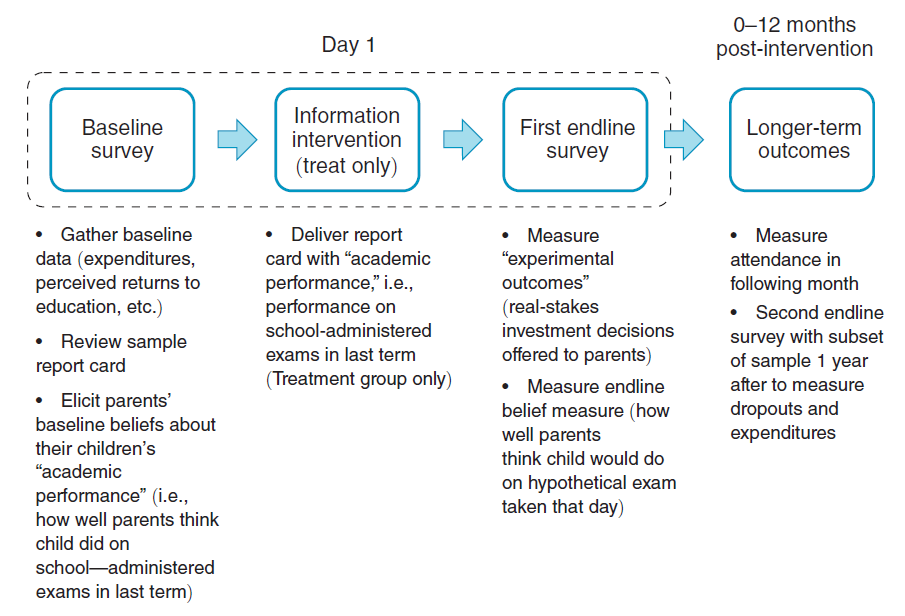
Balance
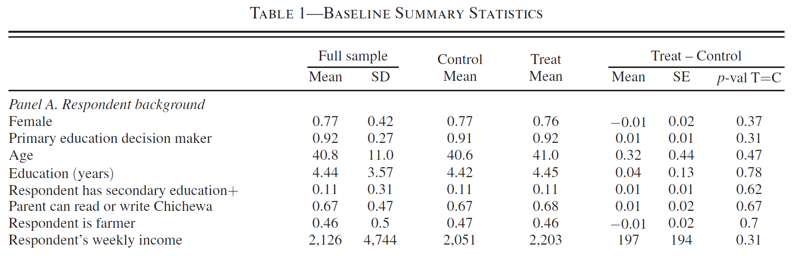
Simple difference between means
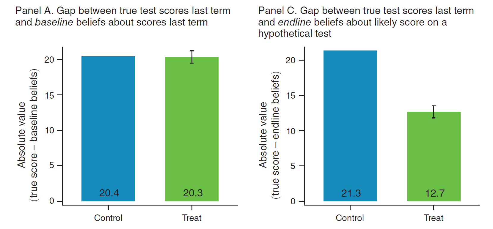
Heterogeneity
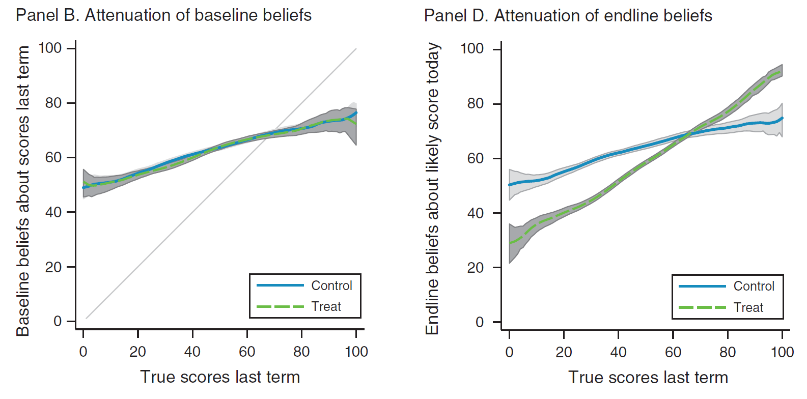
Regression
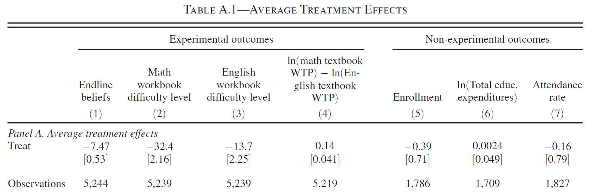
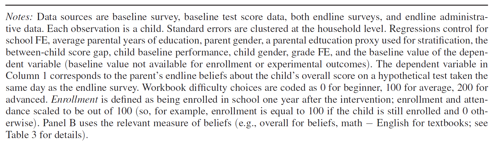
Potential Outcomes Framework
Neyman-Rubin Causal Model
The Potential Outcomes Framework is a key component of the Neyman-Rubin Causal Model1
We won’t cover all aspects of this model.
I will reference texts in green boxes that you can visit to read further
TipOn Causation
The Neyman-Rubin Causal Model is not the only framework for defining causal relationships. In addition, it is a model well suited to the analysis of experimental data. Another causal framework Directed Acyclic Graphs (DAGs) has become very influential in computer and data sciences. See Pearl and Mackenzie (2018)’s now famous book, They Book of Why, on the topic. G. W. Imbens (2020) provides an excellent discussion of DAG versus POF, and why POF is a more natural fit for economists (see also Heckman and Pinto 2022).
Finally, there are other notions of causal relations in Econometrics. For example, in time series there is the concept of Granger causation which relates more to temporal prediction and structural modelling thinks about causation outside of the “no causation without manipulation” notion of causation within the Neyman-Rubin model (Rubin 1975, 238). You might enjoy Hoover (2008)’s discussion on the topic.
Component 1
The Neyman-Rubin model has three important components (G. W. Imbens and Rubin 2015)
Potential Outcomes: The outcomes corresponding to different levels of treatment or manipulation: “no causation without manipulation” (Rubin 1975, 238)
Potential outcomes are a priori observable, but a posteriori only one outcome is observable.
A variable can only be a “cause” if it is possible, at least in principle, to conceive of a hypothetical or physical intervention (“treatment”) that manipulates it. We tend not to discuss the causal effect of demographic characteristics.2
Components 2
Multiple units: Given the limit on observation, one must observe multiple units to infer a causal effect.
- Need to make a key stability assumption: Stable Unit Treatment Value Assumption (SUTVA).
TipSUTVA
The Stable Unit Treatment Value Assumption (SUTVA) is an overarching assumption for this entire Neyman-Rubin Causal Model
“The potential outcomes for any unit do not vary with the treatments assigned to other units, and, for each unit, there are no different forms or versions of each treatment level, which lead to different potential outcomes.” (G. W. Imbens and Rubin 2015, 10)
This assumption,
Rules out interference between treatment units. This rules out any spillover effects between ‘treatment’ and ‘control’.
Ensures that there are no hidden variations in the treatment level. It is okay for there to be different levels of treatment, so long as they are explicit and well-defined a priori.
Component 3
Assignment mechanism: The function that determines the manipulation of units.
Assignment may be:
probabilistic; e.g. randomized experiment
deterministic; e.g. thresholds/cutoffs
conditional; depend partly depend on observable characteristics (\(\mathbf{x}_i\)).
controlled (by the researcher); e.g. randomized control trial
exogenous (to the treatment unit); e.g. public policy or natural experiments3
known (by the researcher); e.g. controlled or natural experiments
unknown; e.g. observational study,
TipPropensity score
If you continue to study causal inference you learn about methodologies like propensity score matching. The propensity score is the probability of treatment conditional on a set of observable characteristics.
\[ \rho(\mathbf{x_i}) = Pr(w_i=1|\mathbf{x}_i) \]
This measure is key to many causal inference results. You can re-frame the question “do we know the assignment mechanism” to “do we know the functional form of the propensity score”.
Example
Consider the example of Dizon-Ross (2019): there are two possible states of the world:
Treated:
- receive information
Researcher observes:
\[ y(\text{info}) \]
Untreated: (control)
- no information (status-quo)
Researcher observes: \[ y(\text{status-quo}) \]
We call these potential outcomes.
Possible outcomes
For a discrete outcome like enrollment there are 4 possible outcomes:
Enroll only with information
\[ y(\text{info})=\textcolor{red}{\text{enroll}} \qquad \text{and}\qquad y(\text{status-quo})=\textcolor{blue}{\text{don't enroll}} \]
Enroll, regardless
\[ y(\text{info})=\textcolor{red}{\text{enroll}} \qquad \text{and}\qquad y(\text{status-quo})=\textcolor{red}{\text{enroll}} \]
Don’t enroll, regardless
\[ y(\text{info})=\textcolor{blue}{\text{don't enroll}} \qquad \text{and}\qquad y(\text{status-quo})=\textcolor{blue}{\text{don't enroll}} \]
Enroll only without information
\[ y(\text{info})=\textcolor{blue}{\text{don't enroll}} \qquad \text{and}\qquad y(\text{status-quo})=\textcolor{red}{\text{enroll}} \]
Causal effect
According to the Neyman-Rubin Causal Model, in:
scenarios (1) and (4) there has been a causal effect
scenarios (2) and (3) there has been NO causal effect.
Important
Notice two things (G. W. Imbens and Rubin 2015, 6),
- “First, the definition of the causal effect depends on the potential outcomes, but it does not depend on which outcome is actually observed.”
2 “Second, the causal effect is the comparison of potential outcomes, for the same unit, at the same moment in time post-treatment. In particular, the causal effect is not defined in terms of comparisons of outcomes at different times.”
Notation
Let \(w_i \in \{0,1\}\) be an indicator of an individuals discrete treatment status.4:
\(y_i\small{(1)}\) be the potential outcome when treated
\(y_i\small{(0)}\) be the potential outcome when not treated5
TipContinuous Treatment
We focus here on discrete treatments. It is straight forward to incorporate additional, separate treatments, but to model a continuous treatment you need to make additional assumptions about the functional form of the causal model. The only assumption we have made here is that of additive treatment effects: \(y_i\small{(1)} = y_i\small{(0)}+\tau_i\).
The model may in fact be multiplicative: \(y_i\small{(1)} = y_i\small{(0)}\times\tau_i\). This distinction becomes important when you consider that many researchers use this framework to estimate treatment effects measured in log-transformed outcome variables.
One solution to the continuous treatment problem is to think about different treatment “dosages” (as in medicine). This approach discretizes the continuous treatment and returns the problem to the simple binary case.
Observed outcome
A priori, both potential outcomes could be realised, but in the data you observe only one:
\[ y_i = \begin{cases}y_i\small{(1)}\quad \text{if}\; w_i=1 \\ y_i\small{(0)}\quad \text{if}\; w_i=0 \end{cases} \]
“fundamental problem of causal inference” (Holland 1986, 947)
Which we can write this as a linear function:
\[ y_i = y_i\small{(0)} + w_i\big(y_i\small{(1)}-y_i\small{(0)}\big) \]
ITE
The individual (unit) treatment effect (ITE) is defined as,
\[ \tau_i = y_i\small{(1)}-y_i\small{(0)} \]
However, you cannot observe (identify) or estimate the ITE
WHY?
it would require you to observe both potential outcomes of the same unit in the same period
referred to as the “missing data problem” (G. W. Imbens and Rubin 2015, 34)
Notice!
- the individual level treatment effect varies at the individual level: \(\tau_i\)
Visualization
A priori, both potential outcomes are observable
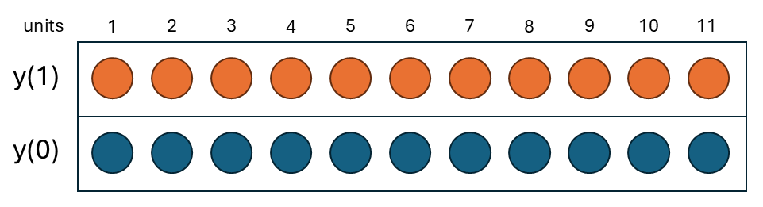
Then, treatment is assigned
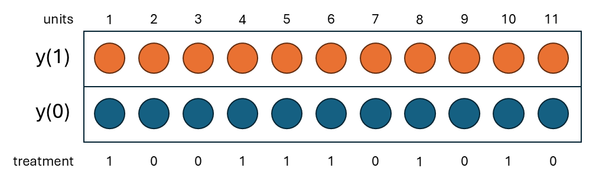
Treatment determines which PO you observe
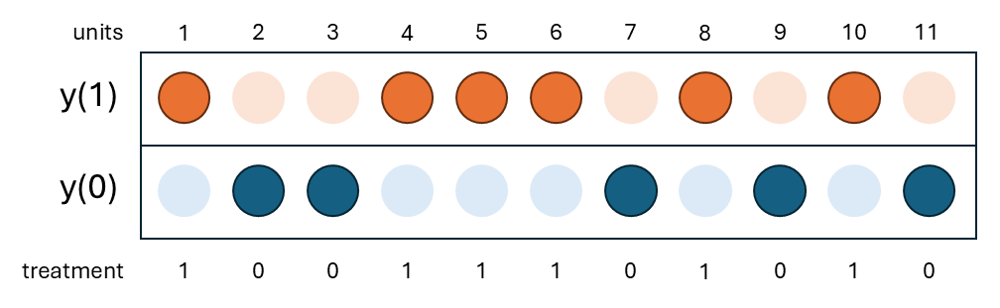
There is an observed outcome and (theoretically) a missing one
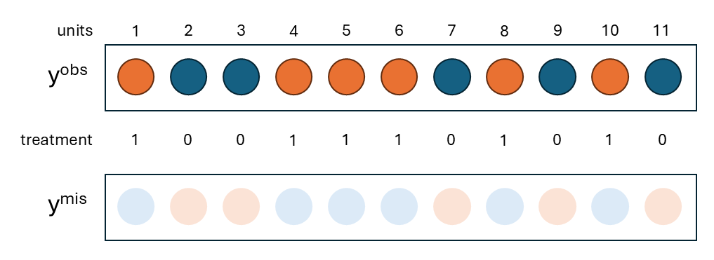
Average TEs
In place of the ITE, we focus on identifying and estimating average TEs
Average Treatment Effect (ATE)
\[ \tau_{ate} = E[\tau_i] = E\big[y_i\small{(1)}-y_i\small{(0)}\big] \]
Average Treatment Effect of the Treated (ATT)
\[ \tau_{att} = E[\tau_i|w_i = 1] = E\big[y_i\small{(1)}-y_i\small{(0)}|w_i=1\big] \]
Average Treatment Effect of the Untreated (ATU)
\[ \tau_{atu} = E[\tau_i|w_i = 0] = E\big[y_i\small{(1)}-y_i\small{(0)}|w_i=0\big] \]
These are called causal estimands
TipFinite vs Super Population
These are all super population casual estimands, denoted in terms of the expected values. There is a corresponding set of finite sample causal estimands in which the realized sample is held constant (see G. W. Imbens and Rubin 2015).
In our discussion of regression models, the primary source of randomness was sampling. The super population definition of causal estimands takes the same approach: the expectation here is with respect to the (unobservable) population distributions.
However, in this world of randomized experiments there is a second source of randomness: assignment (i.e. \(w_i\)). In a different realization of the experiment, a different set of individuals within the same sample could have been treated. You can therefore think about the ATE of the finite, fixed sample.
\[ \tau^{fs}_{ate} = \frac{1}{n}\sum_{i=1}^n\tau_i = \frac{1}{n}\sum_{i=1}^n (y_i\small{(1)}-y_i\small{(0)}) \]
As with the super population ATE, you can observe this in the data. It would require knowing both \(y_i\small{(1)}\) and \(y_i\small{(0)}\) for every individual.
This finite sample approach tends not to be used extensively in applied economics research. Economists tend to take the approach of thinking about the fixed sample as a draw from the sampled (super) population and use their estimates to learn about the wider population. You see this in the way economists evaluate public policies.
ATE vs ATT
We prefer the ATE if,
we want to learn about the effect on the entire population;
i.e., mandatory exposure.
or lottery
We prefer the ATT if,
the population includes individuals that will not take up the treatment/policy;
e.g., a policy that targets single mothers;
or program is voluntary,
The ATT is “informative about the effect of entirely eliminating the current program” (G. W. Imbens and Wooldridge 2009, 14–15).
Assignment
Two groups
Suppose you treat one group of individuals, while observing another untreated. Then in expectation, you can learn about
\[ E[y_i|w_i = 1] - E[y_i|w_i = 0] \]
Substituting in \(y_i = y_i\small{(0)} + w_i\big(y_i\small{(1)}-y_i\small{(0)}\big)\)
\[ E[y_i\small{(1)}|w_i = 1] - E[y_i\small{(0)}|w_i = 0] \]
Is this equal to either the ATE, ATT, or ATU? NO! \[ E[y_i\small{(1)}|\textcolor{red}{w_i = 1}] - E[y_i\small{(0)}|\textcolor{blue}{w_i = 0}] \]
Why?
- The conditions are not the same!
Decomposition
Let us add and subtract:
\[ \textcolor{red}{E[y_i\small{(0)}|w_i = 1]} \]
the unobserved counterfactual for the treated group.
\[ E[y_i\small{(1)}|w_i = 1] - \textcolor{red}{E[y_i\small{(0)}|w_i = 1]} + \textcolor{red}{E[y_i\small{(0)}|w_i = 1]}- E[y_i\small{(0)}|w_i = 0] \]
The expression has two parts:
\[ \begin{aligned} &\underbrace{E[y_i\small{(1)}|w_i = 1] - \textcolor{red}{E[y_i\small{(0)}|w_i = 1]}} + \underbrace{\textcolor{red}{E[y_i\small{(0)}|w_i = 1]}- E[y_i\small{(0)}|w_i = 0]} \\ =& \underbrace{E[y_i\small{(1)}-y_i\small{(0)}|w_i = 1]}_\text{ATT}+ \underbrace{\textcolor{red}{E[y_i\small{(0)}|w_i = 1]}- E[y_i\small{(0)}|w_i = 0]}_\text{selection} \end{aligned} \]
ImportantSelf-selection
As alluded to earlier in Lecture 3, selection here is different to the problem of sample selection. This selection problem can more aptly described as the “self-selection problem” (Wooldridge 2025, 255).
Selection
The problem of selection into treatment is fundamental to any discussion of causation.
\[ \underbrace{\textcolor{red}{E[y_i\small{(0)}|w_i = 1]}- E[y_i\small{(0)}|w_i = 0]}_\text{selection} \]
The term describes the difference between
an unobserved counterfactual outcome of the treated group: the outcome mean you would have observed, had the group NOT been treated
the observed outcome mean of the untreated (control) group
Unconfoundedness
In order to say much more, we need an assumption:
Unconfounded assignment: assignment into the treatment is unconfounded if
\[ y_i\small{(1)},y_i\small{(0)} \perp w_i \]
And, if assignment is random, then it is unconfounded.
Note
Some people equate unconfoundedness with randomization, but they are distinct. Unconfoundedness is a property of an assignment mechanism: treatment assignment is independent of potential outcomes, possibly conditional on covariates. Randomization is one particular assignment mechanism that guarantees this property by design. In observational studies, by contrast, unconfoundedness can’t be guaranteed and must instead be assumed.
TipUnconfounded vs exogenous
Unconfoundedness should also be distinguished from exogeneity, a term that is used in several different senses. In applied work it often means simply that a treatment is imposed from outside, as with a government policy change, but external imposition does not ensure that assignment is unrelated to the factors that determine outcomes. In econometrics it more formally means that a regressor is uncorrelated with the error term of a particular model, which is both a weaker condition than independence and one that depends on how the model is specified. Unconfoundedness, by contrast, is defined directly in terms of the assignment mechanism and the potential outcomes: assignment is independent of the potential outcomes given covariates, that is, as if randomly assigned.
Unconfounded assignment
\(E[y_i\small{(0)}|w_i=1] = E[y_i\small{(0)}|w_i=0] = E[y_i\small{(0)}]\)
\[ \Rightarrow \underbrace{\textcolor{red}{E[y_i\small{(0)}|w_i = 1]}- E[y_i\small{(0)}|w_i = 0]}_\text{selection} = 0 \]
- \(\underbrace{E[y_i\small{(1)}-y_i\small{(0)}|w_i = 1]}_\text{ATT}=\underbrace{E[y_i\small{(1)}-y_i\small{(0)}|w_i = 0]}_\text{ATU}=\underbrace{E[y_i\small{(1)}-y_i\small{(0)}}_\text{ATE}\)
If assignment is unconfounded, then
\[ E[y_i|w_i = 1] - E[y_i|w_i = 0] = \tau_{ate} \]
We therefore refer to unconfoundedness as the identifying assumption.
- without it we cannot learn about the ATE (or ATT) from the difference between two groups.
Testing unconfoundedness
In practice, researchers attempt to demonstrate that “randomization has worked” through the construction of a balance table
Test difference in baseline covariates across treatment-control
Can do a joint ANOVA test or adjust \(p\)-values for multiple inference.
Covariates must be observable (hence, baseline survey)
Researcher hopes to fail to reject \(H_0:\) difference. Does not prove unconfounded assignment.
ImportantExpectation vs Realization
Random assignment gives you unconfoundedness, which in expectation means that the treatment and control group are (theoretically) the same. The realized allocation will consist of two groups that are NOT the same.
We can rely on LLN to say that for a large enough sample, the mean of each group approaches its expected value. But, many RCTs do not have very large samples.
Estimation
Estimator
Under unconfoundedness, the ATE has a simple difference between means (SDM) estimator (Wooldridge 2025, sec. 2.7a)
\[ \hat{\tau} = \bar{y}_1 - \bar{y}_0 \]
where,
\[ \bar{y}_1 = \frac{1}{\textcolor{red}{n_1}}\sum_{i:\textcolor{red}{w_i=1}}y_i \qquad \text{and}\qquad \bar{y}_0 =\frac{1}{\textcolor{blue}{n_0}}\sum_{i:\textcolor{blue}{w_i=0}}y_i \]
and \(n_1\) (\(n_0\)) is number of treated (control) units
Variance
The variance of this estimator is
\[ Var(\hat{\tau}) = \frac{\sigma_0^2}{n_0} + \frac{\sigma_1^2}{n_1} \]
Which can be estimated by,
\[ \widehat{Var}(\hat{\tau}) = \frac{\hat{\sigma}_0^2}{n_0} + \frac{\hat{\sigma}_1^2}{n_1} \]
where \(\hat{\sigma}_j^2 = \frac{1}{n_j-1}\sum_{i: w_i=j} (y_i-\bar{y}_j)^2\) for \(j=0,1\).
- We call this the Neyman variance estimator within Causal Inference literature.6
Homogeneous vs heterogenous TEs
If TEs are homogeneous:
\[ \tau_i=y_i\small{(1)}-y_i\small{(0)}=\tau \;\forall\; i \]
Then,
\[ y_i = y_i\small{(0)} + w_i(y_i\small{(1)}-y_i\small{(0)}) = y_i\small{(0)} + w_i\tau \]
And,
\[ \sigma_0^2 = \sigma_1^2 = \sigma^2 \]
Demonstration
Consider the following (simulated) distribution of \(y_0\), which need not not be normal.
If TEs are homogeneous, then \(y_i\small{(1)} = y_i\small{(0)} + \tau\) (i.e. a mean shift)
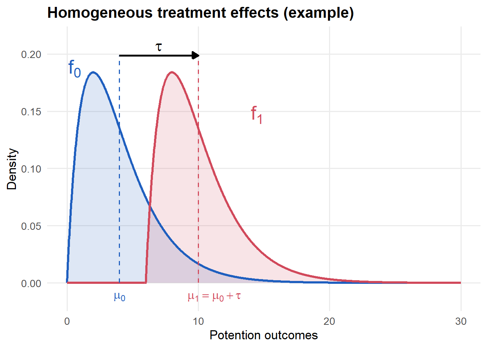
The variance does not change.
Homogenous TEs
If TEs are homogenous
\[ Var(\hat{\tau}) = \frac{\sigma_0^2}{n_0} + \frac{\sigma_1^2}{n_1} = \sigma^2\bigg(\frac{1}{n_1} + \frac{1}{n_0}\bigg) \]
Which can be estimated as,
\[ \hat{\sigma}^2 = \frac{1}{n-2}\big((n_0-1)\times \hat\sigma_0^2 + (n_1-1)\times \hat\sigma_1^2 \big) \]
We call this the constant variance estimator.
If the TEs are heterogeneous, then \(y_i\small{(1)} = y_i\small{(0)} + \tau_i\)
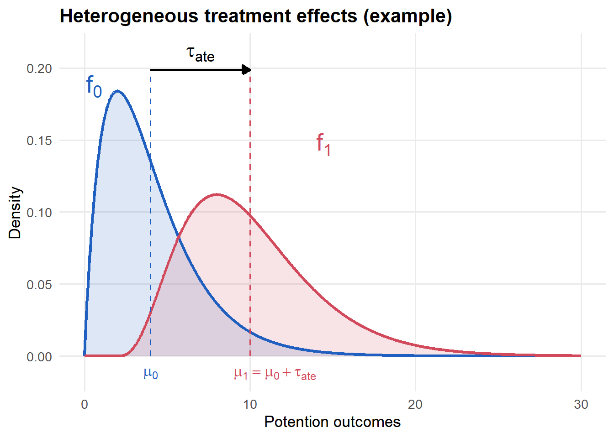
Distribution
Note, we do not know the distribution of \(y_i\small{(0)}\) or \(y_i\small{(1)}\)!
In applied work, researchers prefer not to make any assumptions
Rely on CLT to show asymptotic distribution is normal
In practice, and since RCTs often have a small sample, use \(t\)-distribution to be more conservative
There are other approaches to inference (e.g., permutation tests like Fisher’s exact \(p\)-value) that we won’t cover here, but are more relevant for small samples.
In Stata/R
Example uses a 10% sample of the replication data for Dizon-Ross (2019).
Constant variance test
ttest belief_err_bl, by(treat)Two-sample t test with equal variances
------------------------------------------------------------------------------
Group | Obs Mean Std. err. Std. dev. [95% conf. interval]
---------+--------------------------------------------------------------------
0 | 674 20.61721 .5519379 14.32914 19.53348 21.70094
1 | 638 20.23511 .5867858 14.82142 19.08284 21.38738
---------+--------------------------------------------------------------------
Combined | 1,312 20.4314 .4021444 14.56629 19.64249 21.22032
---------+--------------------------------------------------------------------
diff | .382101 .8048296 -1.196795 1.960997
------------------------------------------------------------------------------
diff = mean(0) - mean(1) t = 0.4748
H0: diff = 0 Degrees of freedom = 1310
Ha: diff < 0 Ha: diff != 0 Ha: diff > 0
Pr(T < t) = 0.6825 Pr(|T| > |t|) = 0.6350 Pr(T > t) = 0.3175Unequal variance test (Neyman)
ttest belief_err_bl, by(treat) unequalTwo-sample t test with unequal variances
------------------------------------------------------------------------------
Group | Obs Mean Std. err. Std. dev. [95% conf. interval]
---------+--------------------------------------------------------------------
0 | 674 20.61721 .5519379 14.32914 19.53348 21.70094
1 | 638 20.23511 .5867858 14.82142 19.08284 21.38738
---------+--------------------------------------------------------------------
Combined | 1,312 20.4314 .4021444 14.56629 19.64249 21.22032
---------+--------------------------------------------------------------------
diff | .382101 .8055762 -1.198271 1.962473
------------------------------------------------------------------------------
diff = mean(0) - mean(1) t = 0.4743
H0: diff = 0 Satterthwaite's degrees of freedom = 1299.78
Ha: diff < 0 Ha: diff != 0 Ha: diff > 0
Pr(T < t) = 0.6823 Pr(|T| > |t|) = 0.6354 Pr(T > t) = 0.3177Constant variance test
t.test(belief_err_bl ~ treat, data = dr19_dta, var.equal = TRUE)
Two Sample t-test
data: belief_err_bl by treat
t = 0.47476, df = 1310, p-value = 0.635
alternative hypothesis: true difference in means between group 0 and group 1 is not equal to 0
95 percent confidence interval:
-1.196795 1.960997
sample estimates:
mean in group 0 mean in group 1
20.61721 20.23511 Unequal variance test (Neyman)
t.test(belief_err_bl ~ treat, data = dr19_dta, var.equal = FALSE)
Welch Two Sample t-test
data: belief_err_bl by treat
t = 0.47432, df = 1299.8, p-value = 0.6354
alternative hypothesis: true difference in means between group 0 and group 1 is not equal to 0
95 percent confidence interval:
-1.198271 1.962473
sample estimates:
mean in group 0 mean in group 1
20.61721 20.23511 Linear Model
Dummy regressor
We know that for a discrete \(x_i\in\{0,1\}\),
\[ y_i = \beta_0 + \beta_1 x_i + u_i \]
where, \[ \beta_1 = E[y_i|x_i=1]-E[y_i|x_i=0] \]
OLS
Moreover, we showed in Lecture 2 that the OLS estimator for \(\beta_1\) is just,
\[ \hat{\beta}_1 = \bar{y}_1 - \bar{y}_0 \]
Translation of POF
We can translate the POF to a linear regression model,7
\[ \begin{aligned} y_i =& y_i\small{(0)} + w_i(y_i\small{(1)}-y_i\small{(0)}) \\ =& y_i\small{(0)} + \tau_i w_i \\ =& \textcolor{blue}{E[y_i\small{(0)}]} + \tau_i w_i + y_i\small{(0)}-\textcolor{blue}{E[y_i\small{(0)}]} \\ =& \textcolor{blue}{E[y_i\small{(0)}]} + \textcolor{red}{\tau_{ate}} w_i + \underbrace{y_i\small{(0)}-\textcolor{blue}{E[y_i\small{(0)}]} + (\tau_i-\textcolor{red}{\tau_{ate}})w_i}_{u_i} \\ =& \alpha_0 + \textcolor{red}{\tau_{ate}}w_i + u_i \end{aligned} \]
Consider the error term:
\[ u_i = \underbrace{y_i\small{(0)}-\textcolor{blue}{E[y_i\small{(0)}]}}_{1.} + \underbrace{(\tau_i-\textcolor{red}{\tau_{ate}})}_{2.}\underbrace{w_i}_{3.} \]
it includes,
the deviation of \(y_i(0)\) from its unconditional mean
the devation of \(\tau_i\) from its unconditional mean (i.e. \(\tau_{ate}\)) \(\Leftarrow\) heterogeneity
\(w_i\) is found in the error term, as well
Wooldridge’s notation
Wooldridge (2025, sec. 7.2a) defines:
\[ \begin{aligned} u_i\small{(0)} =& y_i\small{(0)}-E[y_i\small{(0)}] \\ u_i\small{(1)} =& y_i\small{(1)}-E[y_i\small{(1)}] \\ \end{aligned} \]
which then gives you,
\[ u_i = u_i\small{(0)} = w_i(u_i\small{(1)}-u_i\small{(0)}) \]
from p. 55. We will not use this notation here. However, it helps you, feel free to use it.
Solve for \(E[u_i|w_i=0]\)
\[ \begin{aligned} E[u_i|w_i=0] =& E\big[y_i\small{(0)}-\textcolor{blue}{E[y_i\small{(0)}]} + (\tau_i-\textcolor{red}{\tau_{ate}})w_i\big|w_i=0\big] \\ =&E\big[y_i\small{(0)}-\textcolor{blue}{E[y_i\small{(0)}]}\big|w_i=0\big] \\ =& E[y_i\small{(0)}|w_i=0]-\textcolor{blue}{E[y_i\small{(0)}]} \\ \end{aligned} \]
If assignment is unconfounded:
\[ E[y_i\small{(0)}|w_i=0]-\textcolor{blue}{E[y_i\small{(0)}]} = E[y_i\small{(0)}]-\textcolor{blue}{E[y_i\small{(0)}]} = 0 \]
Solve for \(E[u_i|w_i=1]\)
\[ \begin{aligned} E[u_i|w_i=1] =& E\big[y_i\small{(0)}-\textcolor{blue}{E[y_i\small{(0)}]} + (\tau_i-\textcolor{red}{\tau_{ate}})w_i\big|w_i=1\big] \\ =& E\big[y_i\small{(0)}-\textcolor{blue}{E[y_i\small{(0)}]} + y_i\small{(1)}-y_i\small{(0)}-\textcolor{red}{E[y_i\small{(1)}]}+\textcolor{red}{E[y_i\small{(0)}]}\big|w_i=1\big] \\ =& E\big[y_i\small{(1)}-\textcolor{red}{E[y_i\small{(1)}]}\big|w_i=1\big] \\ =& E[y_i\small{(1)}|w_i=1] -\textcolor{red}{E[y_i\small{(1)}]} \end{aligned} \]
Again, if assignment is unconfounded:
\[ E[y_i\small{(1)}|w_i=1] -\textcolor{red}{E[y_i\small{(1)}]} = E[y_i\small{(1)}]-\textcolor{red}{E[y_i\small{(1)}]} = 0 \]
Thus, with unconfounded assignment we can write,
\[ y_i = \alpha_0 + \tau_{ate}w_i + u_i \]
where,
- slope parameter on \(w_i\) identifies the ATE
- the error term fulfills MLR 4
- OLS estimator is unbiased (for the ATE)
Warning
If given the model \(y_i = \beta_0 + \beta_1 x_i + u_i\) with \(x_i = \{0,1\}\), then it is trivial to say that \(E[u_i|x_i]=0\). This is because we can write the CEF of \(y\) given \(x\) as a linear function:
\[ E[y_i|x_i] = \underbrace{E[y_i|x_i=0]}_{\beta_0} + \underbrace{\big(E[y_i|x_i=1]-E[y_i|x_i=0]\big)}_{\beta_1}x_i \]
All this means is that we can identify the mean of two groups. It does NOT mean that \(\beta_1 = E[y_i|x_i=1]-E[y_i|x_i=0]\) is equal to the ATE. For that, you need unconfoundedness.
Consider the case where \(x_i = \mathbf{1}\{\text{``female''}\}\). Then \(\beta_1\) tells you the mean difference between female and male observations. Would you describe this as the ATE of being female?
Error variance
We have shown that under unconfoundedness \(E[u_i |w_i]=0\).8 What about:
\[ Var(u_i|w_i)=E[u_i^2|w_i]=? \]
Suppose TEs are homogenous: \(\tau_i = \tau = \tau_{ate}\;\forall\;i\)
\[ u_i = y_i\small{(0)}-\textcolor{blue}{E[y_i\small{(0)}]} + \underbrace{(\tau_i-\textcolor{red}{\tau_{ate}})}_{=0}w_i = y_i\small{(0)}-\textcolor{blue}{E[y_i\small{(0)}]} \]
Homoskedasticity
If treatment effects are homogeneous, then
\[ E[u_i^2|w_i] = E[(y_i\small{(0)}-\textcolor{blue}{E[y_i\small{(0)}]})^2|w_i] = E[(y_i\small{(0)}-\textcolor{blue}{E[y_i\small{(0)}]})^2] = \sigma^2_0 = \sigma^2 \]
under unconfoundedness.
- homogeneity \(\Rightarrow\) homoskedastic error variance
Heteroskedasticity
If TEs are heterogenous:
\[ E[u_i^2|w_i] = \begin{cases} E[(y_i\small{(0)}-\textcolor{blue}{E[y_i\small{(0)}]})^2] = \sigma^2_0 \quad \text{if}\;w_i=0 \\ E[(y_i\small{(1)}-\textcolor{red}{E[y_i\small{(1)}]})^2] = \sigma^2_1 \quad \text{if}\;w_i=1 \\ \end{cases} \]
under unconfoundedness.
- heterogeneity \(\Rightarrow\) heteroskedastic error variance
TipDeaton’s critique
Angus Deaton - a noble laureate in economics - is famous for not being overly enthusiastic about the use of RCTs in Economics; in particular, in Development Econonomics (see Athey and Imbens 2017). His critiques of the field range from the ethics of RCTs in poor countries, questions about the real-world policy relevance of RCT-based causal estimates, and more technical points G. Imbens (2018).
““I argue that evidence from randomized experiments has no special priority. … Randomized experiments cannot automatically trump other evidence, they do not occupy any special place in some hierarchy of evidence” (Deaton 2010, 426)
One technical point Deaton emphasized - especially early on - was the apparent lack of attention/care shown to the correct estimation of SEs in RCT-based research.
“If the regression … is run with the standard heteroskedasticity correction to the standard error, the result will be the same as the formula for the standard error of the difference between two means, but not otherwise except in the special case where there are equal numbers of experimental and controls, in which case it turns out that the correction makes no difference and the OLS standard error is correct. It is not clear in the experimental development literature whether the correction is routinely done in practice…” (Deaton 2010, 442)
It is fair to say that the research on best practice has come a long way since then and there is a vaste literature topics like SE estimation for randomized experiments (Athey and Imbens 2017). Moreover, the debate over the significance of RCTs in Economics has largely been won, and not by Deaton. In 2019 Esther Duflo, Abhijit Banerjee, and Michael Kremer won the Nobel Prize in Economics “for their experimental approach to alleviating global poverty”. The use of RCTs to answer important empirical questions about how the lives of the poor has fundamentally shaped how we design and evaluate real world policies (see Duflo and Banerjee 2011).
Variance estimator
We know from Lecture 3 that the (conditional) variance of the OLS estimator for \(\tau_{ate}\) is,
\[ \widehat{Var}(\hat{\tau}_{ols}|W) = \frac{\hat{\sigma}^2_{ols}}{SST_w} \]
under MLR 5 (\(\Leftarrow\) homogeneous TEs). Where,
\[ \hat{\sigma}^2_{ols} = \frac{1}{n-2}\sum_{i=1}^n \hat{u}_i^2 \]
This is mathematically equivalent to the constant variance estimator.
\[ = \frac{1}{n-2}\big((n_0-1)\times\hat\sigma_0^2 + (n_1-1)\times\hat\sigma_1^2\big) \]
NoteProof
The proof follows a simple trick of splitting the sample into two groups: (1) \(w_i = 0\) and (2) \(w_i = 1\).
\[ \begin{aligned} \sum_{i=1}^n \hat{u}_i^2 =& \sum_{i=1}^n(y_i-\hat{\alpha}_0-\hat{\tau}_{ols}w_i)^2 \\ =& \sum_{i:w_i=0}(y_i-\hat{\alpha}_0-\hat{\tau}_{ols}w_i)^2 + \sum_{i:w_i=1}(y_i-\hat{\alpha}_0-\hat{\tau}_{ols}w_i)^2 \\ =& \sum_{i:w_i=0}(y_i-\hat{\alpha}_0)^2 + \sum_{i:w_i=1}(y_i-\hat{\alpha}_0-\hat{\tau}_{ols})^2 \end{aligned} \]
Since \(\hat{\alpha}_0 = \bar{y}_0\) and \(\hat{\alpha}_0 + \hat{\tau}_{ols}= \bar{y}_1\), the above is just
\[ \begin{aligned} & \sum_{i:w_i=1}(y_i-\bar{y}_0)^2 + \sum_{i:w_i=0}(y_i-\bar{y}_1)^2 \\ =& (n_0-1)\times\hat\sigma_0^2 + (n_1-1)\times\hat\sigma_1^2 \end{aligned} \]
In the denominator is
\[ SST_w = n\bar{w}(1-\bar{w}) \]
This formula is quadratic in \(\bar{w}\) - the share of the sample treated.
At \(\bar{w}=0.5\), \(SST_w\) is maximized and \(Var(\hat{\tau}^{OLS}|W)\) is minimized (holding other factors fixed).
A balanced treatment is good for statistical power, as is a larger sample size.
NoteProof
This proof follows the same simple trick of splitting the sample into two groups: (1) \(w_i = 0\) and (2) \(w_i = 1\).
\[ \begin{aligned} SST_w =& \sum_{i=1}^n(w_i-\bar{w})^2 \\ =& \sum_{i:w_i=0}(0-\bar{w})^2 + \sum_{i:w_i=1}(1-\bar{w})^2 \\ =& n_0 \bar{w}^2 + n_1(1-\bar{w})^2 \\ =& \underbrace{n(1-\bar{w})}_{=n_0}\bar{w}^2 + \underbrace{n\bar{w}}_{=n_1}(1-\bar{w})^2 \\ =& n\bar{w}(1-\bar{w})(\bar{w}+1-\bar{w}) \\ =& n\bar{w}(1-\bar{w}) \end{aligned} \]
The proof exploits the fact that \(\bar{w}\) is just the share of the sample that is treated: \(n_1/n\). Likewise, \(1-\bar{w} = n_0/n\), the share of the sample untreated.
What if MLR 5 (\(\Leftarrow\) heterogeneous TEs) does not hold?
- The White (1980) heteroskedastic-consistent estimator from Lecture 5 was,
\[ HC0 = \frac{\sum_{i=1}^{n}(w_{i}-\bar{w})^2\hat{u}_i^2}{\text{SST}_w^2} \]
It can be shown (we will not) that,
\[ HC0 \neq \frac{\hat{\sigma}_0^2}{n_0} + \frac{\hat{\sigma}_1^2}{n_1} = HC2 \]
The Neyman estimator is numerically equivalent to HC2.
- in practice, all HC0-HC3 estimators are asymptotically consistent.
- HC3 is recommended for smaller samples.
TipProof
You can use the same trick of splitting the summation to show,
\[ \begin{aligned} \widehat{Var}(\hat{\tau}_{ols}|W) =& \frac{\sum_{i=1}^{n}(w_{i}-\bar{w})^2\hat{u}_i^2}{\text{SST}_w^2} \\ =& \frac{\sum_{i:w_i=1}^{n}(1-\bar{w})^2(y_i-\hat{\alpha}_{ols}-\hat{\tau}_{ols})^2+\sum_{i:w_i=0}^{n}(-\bar{w})^2(y_i-\hat{\alpha}_{ols})^2}{\text{SST}_w^2} \\ =& \frac{(1-\bar{w})^2\sum_{i:w_i=1}^{n}(y_i-\hat{\alpha}_{ols}-\hat{\tau}_{ols})^2+\bar{w}^2\sum_{i:w_i=0}^{n}(y_i-\hat{\alpha}_{ols})^2}{\text{SST}_w^2} \\ =& \frac{(1-\bar{w})^2(n_1-1)\hat\sigma_1^2+\bar{w}^2(n_0-1)\hat\sigma_0^2}{(n\bar{w}(1-\bar{w}))^2} \\ =& \frac{n_1-1}{n_1^2}\hat\sigma_1^2+\frac{n_0-1}{n_0^2}\hat\sigma_0^2 \end{aligned} \]
And HC1 (Stata’s robust default) will be,
\[ \frac{n}{n-2}\times \Bigg[\frac{n_1-1}{n_1^2}\hat\sigma_1^2+\frac{n_0-1}{n_0^2}\hat\sigma_0^2\Bigg] \]
It is evident that for \(n\) large, these estimators will be very similar to Neyman’s estimator. You can show that HC2 is algebraically equivalent to Neyman (also referred to as Welch test/estimator).
Regression Adjustment
Purpose
The variance of the estimator is (assuming homogeneous TEs),
\[ Var(\hat{\tau}_{ols}|W) = \frac{Var(u_i|w_i)}{SST_w} = \frac{\sigma^2_u}{SST_w} \]
where \(u_i\) is from the model,
\[ y_i = \alpha_0 + \tau_{ate}w_i + u_i \]
- The only variation in \(y\) explained by this model is the difference between treatment-control.
- Will result in high variance and low-powered test.
Covariates
Suppose,
\[ u_i = \gamma x_i + v_i \]
where \(x\) is a regressor measured before assignment9
likely explain part of the outcome (i.e. \(\gamma\neq 0\))
commonly referred to as baseline covariates in RCTs
Regression adjustment
Instead of the simple regression, we estimate
\[ y_i = \alpha_0 + \tau_{ate}w_i + \gamma x_i + v_i \]
- Wooldridge (2025, 257) refers to this as the Restricted Regression Adjustment (RRA)
Variance
From Lecture 3 we know,
\[ Var(\hat{\tau}_{rra}|W,X) = \frac{Var(v_i|w_i,x_i)}{SSR_w} = \frac{\sigma^2_v}{SSR_w} \]
where,
\[ SSR_w=SST_w (1-R_w^2) \]
\(R^2_w\) is the amount of variance in assignment explained by the covariates. This should be low, but won’t be zero.
While \(R^2_w\neq 0\) in the finite sample, \(R^2_w\rightarrow 0\) as \(n\rightarrow \infty\)
So, \(SSR_w\approx SST_w\).
Error variance
The improvement in power comes from the fact that,
\[ \underbrace{Var(u_i|w_i)}_{\sigma^2_u} = Var(\gamma x_i + v_i|w_i) = \underbrace{\gamma^2 Var(x_i)}_{>0} + \underbrace{Var(v_i|w_i,x_i)}_{\sigma^2_v} \]
assuming
\(Cov(x_i,v_i|w_i)=0\)
\(w_i\) is assigned independently of \(x_i\): \(Var(x_i|w_i) = Var(x_i)\)
\(Var(v_i|w_i)=Var(v_i|w_i,x_i)\) (\(\Leftarrow\) heterogeneity unrelated to \(x\))
Power
Putting these two together,
\[ Avar(\hat{\tau}_{rra}) \leq Avar(\hat{\tau}_{ols}) \]
where \(Avar()\) is the asymptotic variance.10
Adding covariates,
Reduces variance of the estimator by reducing the error variance
Little trade-off in terms of the correlation between \(w\) and \(x\) (i.e., \(R^2_w\)) under assignment that is unconfounded (w.r.t. \(x\)’s).
Any finite sample correlation disappears as \(n\rightarrow \infty\).
Covariates must not be potential outcomes of the experiment (i.e. baseline).
Heterogeneity
This simple story is somewhat complicated by heterogeneity:
heterogeneity is sits in the error term
heterogeneity is likely related to \(x\)
heterogeneity (that depends on \(x\)) introduces small-sample bias in models of the form:
\[ y_i = \alpha_0 + \tau_{ate}w_i + \gamma x_i + v_i \]
OLS remains consistent (for the ATE), despite this small-sample bias (Freedman 2008)
URA
To avoid this small-sample bias, you can do Unrestricted Regression Adjustment (URA) (Wooldridge 2025, 257, 259; Negi and Wooldridge 2021).
\[ y_i = \alpha_0 + \tau_{ate}w_i + \gamma x_i + \eta w_i\times (x_i-\bar{x}) + \varepsilon_i \]
includes an interaction between the treatment indicator and the covariate(s)
- models the heterogeneity related \(x\)
the interactions include demeaned covariate(s)
this changes the interpretation of \(\eta\) (see Wooldridge 2025, sec. 6.2d)
ensures that the coefficient on \(w\) remains the ATE
Example: Reivisiting Dizon-Ross (2019)
RCT
Why randomize?
Resolves the problem of self-selection
Information parents have is endogenous
Randomizing who gets information resolves this (in expectation)
Research Design
Baseline survey:
- Measure covariates: balance and power
Endline survey:
Measure outcomes
Need to think about attrition
Balance
Balance:
Test on observables
Doesn’t consider unobservables
Will be non-zero correlation in data
Validates research design
Simple difference between means
SDM:
Measures ATE under unconfoundedness
Might have a high variance
Heterogeneity
Heterogeneity:
POF developed to understand heterogeneous TEs
Researchers will often commit to important margins of heterogeneity in their pre-analysis.
Regression
Regression adjustment:
Can correct for any imbalance
More valuable as a source of improved power
Covariates from baseline (i.e. not outcomes of experiment)
References
Bibliography
Athey, Susan, and Guido W Imbens. 2017. “The Econometrics of Randomized Experiments.” In Handbook of Economic Field Experiments, 1:73–140. Elsevier.
Bertrand, Marianne, and Sendhil Mullainathan. 2004. “Are Emily and Greg More Employable Than Lakisha and Jamal? A Field Experiment on Labor Market Discrimination.” American Economic Review 94 (4): 991–1013.
Deaton, Angus. 2010. “Instruments, Randomization, and Learning about Development.” Journal of Economic Literature 48 (2): 424–55.
Deaton, Angus, and Nancy Cartwright. 2018. “Understanding and Misunderstanding Randomized Controlled Trials.” Social Science & Medicine 210: 2–21.
Dizon-Ross, Rebecca. 2019. “Parents’ Beliefs about Their Children’s Academic Ability: Implications for Educational Investments.” American Economic Review 109 (8): 2728–65.
Duflo, Esther, and Abhijit Banerjee. 2011. Poor Economics. Vol. 619. PublicAffairs, New York.
Freedman, David A. 2008. “On Regression Adjustments to Experimental Data.” Advances in Applied Mathematics 40 (2): 180–93.
Heckman, James J, and Rodrigo Pinto. 2022. “Causality and Econometrics.” National Bureau of Economic Research.
Holland, Paul W. 1986. “Statistics and Causal Inference.” Journal of the American Statistical Association 81 (396): 945–60.
Hoover, Kevin D. 2008. “Causality in Economics and Econometrics.” In The New Palgrave Dictionary of Economics, 1–13. Springer.
Imbens, Guido. 2018. “Understanding and Misunderstanding Randomized Controlled Trials: A Commentary on Deaton and Cartwright.”
Imbens, Guido W. 2020. “Potential Outcome and Directed Acyclic Graph Approaches to Causality: Relevance for Empirical Practice in Economics.” Journal of Economic Literature 58 (4): 1129–79.
Imbens, Guido W, and Donald B Rubin. 2015. “Causal Inference in Statistics, Social, and Biomedical Sciences.” New York 517.
Imbens, Guido W, and Jeffrey M Wooldridge. 2009. “Recent Developments in the Econometrics of Program Evaluation.” Journal of Economic Literature 47 (1): 5–86.
Negi, Akanksha, and Jeffrey M Wooldridge. 2021. “Revisiting Regression Adjustment in Experiments with Heterogeneous Treatment Effects.” Econometric Reviews 40 (5): 504–34.
Oreopoulos, Philip. 2011. “Why Do Skilled Immigrants Struggle in the Labor Market? A Field Experiment with Thirteen Thousand Resumes.” American Economic Journal: Economic Policy 3 (4): 148–71.
Pearl, Judea, and Dana Mackenzie. 2018. “The Book of Why.”
Rubin, Donald B. 1975. “Bayesian Inference for Causality: The Importance of Randomization.” In Proceedings of the Social Statistics Section of the American Statistical Association, 233–39. American Statistical Association, Alexandria, VA.
Wooldridge, Jeffrey M. 2025. “Introductory Econometrics: A Modern Approach.”
Footnotes
Also referred to as the Rubin Causal Model (originally by Holland 1986). The framework is attributed to both Jerzy Neyman and Donald Rubin; as well as Paul Holland (Heckman and Pinto 2022).↩︎
The caveat here might be hypothetical resume studies; e.g. Bertrand and Mullainathan (2004) and Oreopoulos (2011).↩︎
Often referred to as quasi-experiment.↩︎
This notation of \(w_i\) as an indicator of an unit’s treatment status is common in the literature on experiments and is used in one of the seminal books on the topic: G. W. Imbens and Rubin (2015)’s Causal Inference in Statistics, Social, and Biomedical Sciences. You will see it in Wooldridge (2025, sec. 7.6).↩︎
You will see other notations in the literature. For example, the use of superscripts \(\{y_i^1,y_i^0\}\) or subscripts \(\{y_{i1},y_{i0}\}\).↩︎
Also referred to as the Welch test/estimator.↩︎
Wooldridge (2025, sec. 2.7a) also includes a version with homogeneous TEs. This is the more general case.↩︎
Where \(u_i = y_i - \alpha_0 - \tau_{ate}w_i\).↩︎
We can extend the notation to include multiple regressors, but it makes some of the math a little difficult. The conclusion does not change.↩︎
This is a place holder for \(p\lim \hat\sigma^2/(n^{-1}SSR_w)\).↩︎